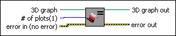
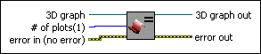

Set Plots VI
Owning Palette: 3D Graph Properties VIs
Requires: Base Development System (Windows)
Sets the number of plots that are available for a 3D graph control.

 Add to the block diagram Add to the block diagram |
 Find on the palette Find on the palette |
Owning Palette: 3D Graph Properties VIs
Requires: Base Development System (Windows)
Sets the number of plots that are available for a 3D graph control.

| Add to the block diagram |
Find on the palette |
 |
3D graph accepts the reference to the 3D control. |
 |
# of plots sets the number of plots for a 3D control. It removes all of the plots that are currently in the graph and adds the number of plots. The default is one plot for a control. |
 |
error in describes error conditions that occur before this node runs. This input provides standard error in functionality. |
 |
3D graph out passes the reference to the 3D control out so that you can use it with other VIs. |
 |
error out contains error information. This output provides standard error out functionality. |